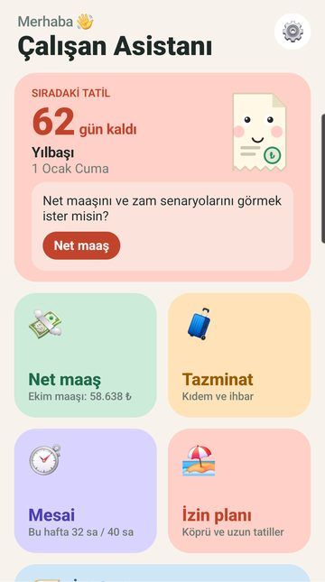
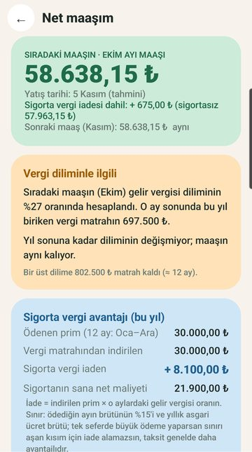
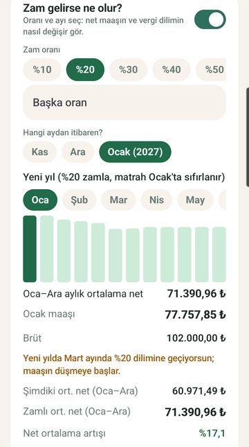
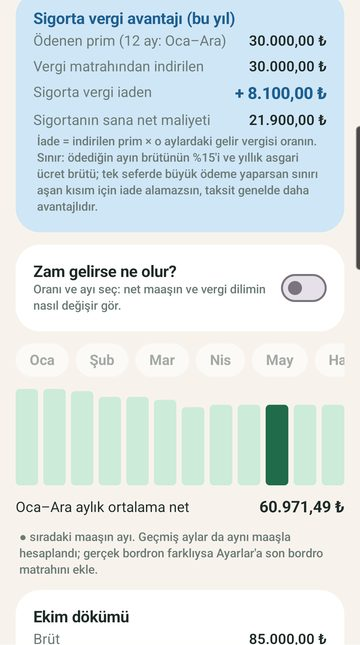
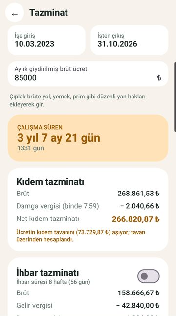
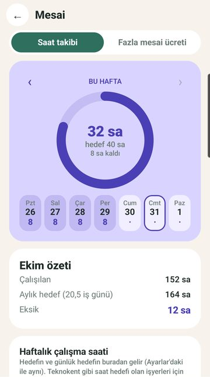
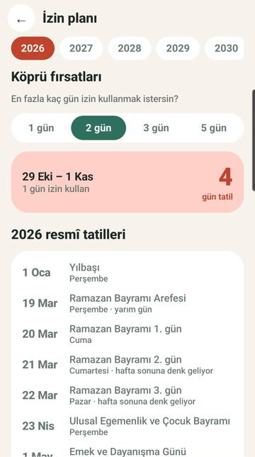
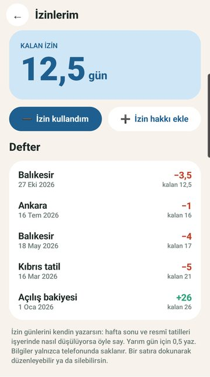

Çalışan Asistanı
Net maaş, kıdem ve ihbar tazminatı, fazla mesai ve izin planı tek uygulamada.
Çalışan Asistanı, çalışanların en çok merak ettiği hesapları sade ve eğlenceli bir arayüzle tek uygulamada toplar. Hesap açmak yok, üyelik yok; girdiğin her şey yalnızca telefonunda kalır. Maaşını ve işe giriş tarihini Ayarlar'a bir kere yaz, ekranlar hazır gelsin. İzinlerim defteriyle kalan yıllık iznini takip et; işten ayrılırken kullanılmayan izin ücretin de hesaplanır.


Ekran görüntüleri








Özellikler
Maaşını bir kere yaz; sıradaki maaşını, yatış tarihini ve 12 ayın tamamını ay ay gör (çoğu şirkette maaş sonraki ayın başında yatar, buna göre gösterilir)
SGK, işsizlik sigortası, gelir vergisi (kümülatif matrah ve vergi dilimleri), damga vergisi ve asgari ücret istisnaları; son bordrodaki matrahı yazarsan sonuç bordroyla aynı çıkar
Üst vergi dilimine hangi ay geçeceğini ve maaşının nasıl düşeceğini gör
"Zam gelirse ne olur?": zam oranını ve ayını seç, zamlı net maaşını, dilim geçişini ve ortalama net maaşının kaç yüzde arttığını gör
Özel sağlık veya hayat sigortası primin varsa: kaç taksitte ödediğini ve başlangıç ayını gir; vergi iadesini, sigortasız net maaşı ve sigortanın sana net maliyetini gör
Başka bir maaşı dene: brütten nete, netten brüte, 12 ay
Emekli çalışanlar için sosyal güvenlik destek primi seçeneği
İşe giriş ve çıkış tarihini, brüt ücretini gir; çalışma süren, kıdem tazminatı ve ihbar süresi hesaplansın
Kıdem tazminatı tavanı dönemine göre uygulanır; vergi kesintileri ayrı ayrı gösterilir
Brüt ve net tutarlar yan yana
Haftalık çalışma saatlerini günlük kaydet, haftalık halkada hedefe ne kadar kaldığını gör; hedefe ulaşınca kutlama!
Hedef saat modu: haftalık saat hedefi olan işyerleri (örneğin teknokentler) için aylık toplam ve hedef karşılaştırması. Yalnızca saatleri sayar
Fazla mesai ücreti hesabı: %50 zamlı fazla mesai ve 45 saatin altındaki sözleşmelerde fazla sürelerle çalışma
İzinlerim: açılış bakiyeni ve yıllık izin haklarını yaz, kullandığın her izni kısa bir açıklamayla (Balıkesir, Kıbrıs tatil) kaydet; kalan gün sayın hep hazır
Tazminat ekranında kalan iznin ücreti de hesaplanır
2026-2035 resmî tatilleri ve bayram arefeleri tek listede
Köprü önerileri: "1 gün izinle 9 gün tatil" gibi en verimli izin aralıkları
Ana ekran bileşeniyle sıradaki tatile kaç gün kaldığını gör
Ana ekranda seni bir bordro karakteri karşılar: göz kırpar, parmağını gözleriyle takip eder. Maaş günü yaklaşınca sevinir, tatile az kalınca güneş gözlüğü takar, haftalık mesai hedefini aşınca yorulur; yılbaşında ve bayramlarda kostüm giyer. Dokunursan günün önerisini ve ilgili ekrana kısayolu gösterir. Asgari ücret, vergi dilimleri ve kıdem tazminatı tavanı gibi her yıl değişen rakamlar, uygulamayı güncellemene gerek kalmadan yenilenir. İnternet yokken uygulama son bilinen rakamlarla çalışır. Hesaplamalar tahmin ve bilgilendirme amaçlıdır; resmî bordro, mali, vergi veya hukuki danışmanlık yerine geçmez. Gerçek tutarlar işvereninin bordrosuna, sözleşmene ve güncel mevzuata göre değişebilir. Tazminat hesapları 4857 sayılı İş Kanunu'na tabi işçiler içindir; memurlar kapsam dışıdır. Uygulama resmî bir kurumla bağlantılı değildir. Hesaplarını bir kez dene, bir daha elinde hesap makinesiyle uğraşma.